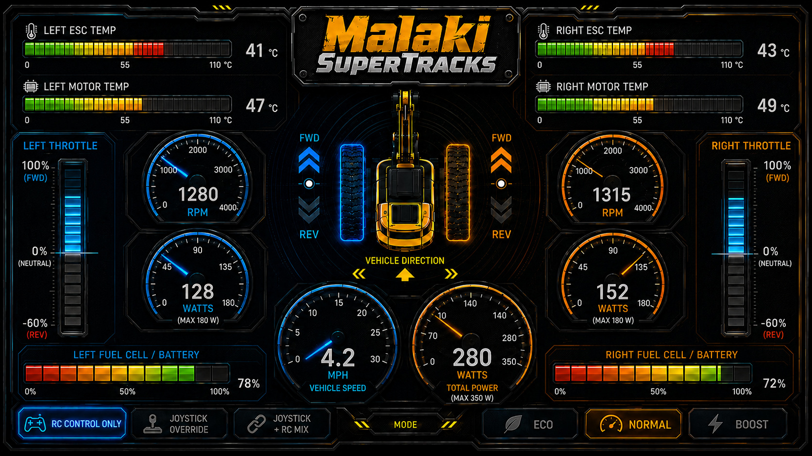

<!doctype html><html lang="en"><meta charset="utf-8"><meta name="viewport" content="width=device-width,initial-scale=1"><title>Malaki SuperTracks · Dashboard Demo</title><style>body{margin:0;background:#10161b;color:#edf5f7;font:16px system-ui}main{max-width:1240px;margin:auto;padding:18px}header{display:flex;align-items:center;flex-wrap:wrap;gap:12px}h1{margin:0;font-size:clamp(20px,4vw,32px)}img{display:block;width:100%;height:auto;margin:12px 0;border-radius:8px}a{color:#8bd9f3}button{background:#263442;color:white;padding:9px 13px;border:1px solid #557083;border-radius:6px;cursor:pointer}</style><main><header><h1>Malaki SuperTracks</h1><a href="hardware-explorer.html">3D hardware</a><a href="knowledge-explorer-kit.html">Knowledge map</a></header><p>Original design mockup</p><p>Based on <a href="https://github.com/boulaajaj/Arduino-DiggerSetup/issues/81">dashboard design issue #81</a>.</p></main></html>